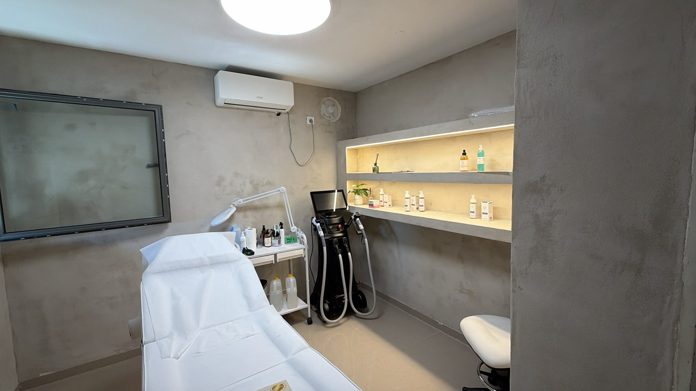
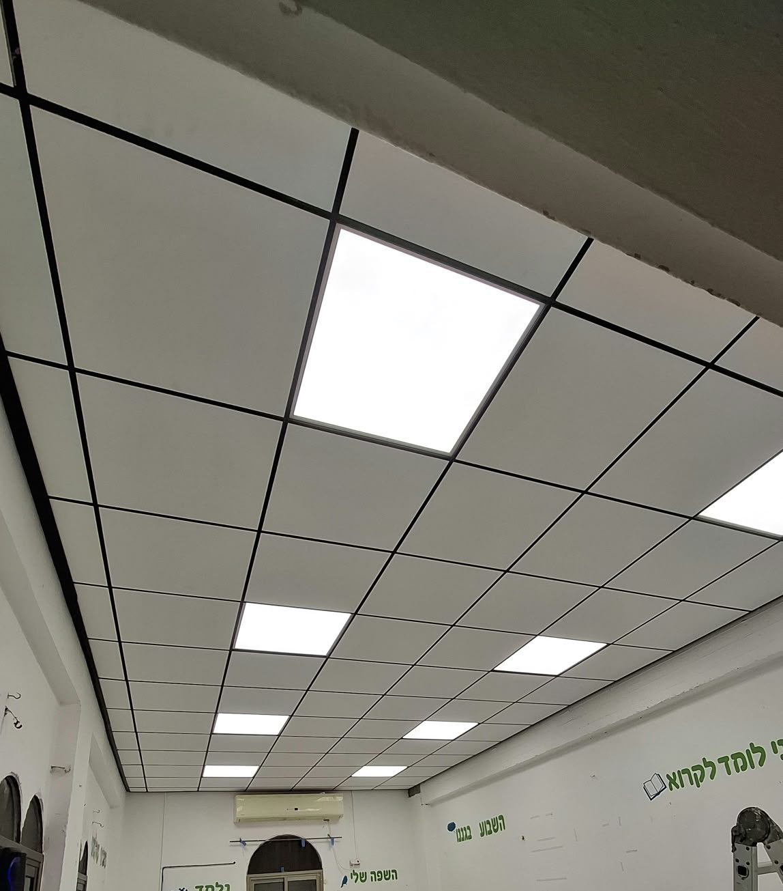
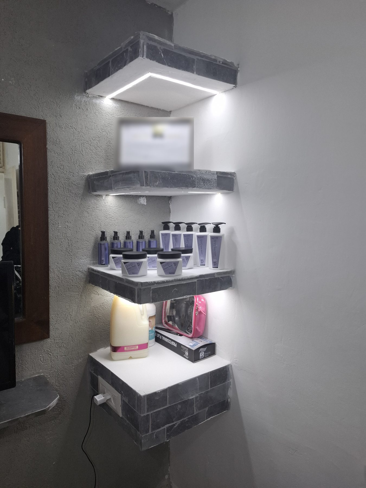
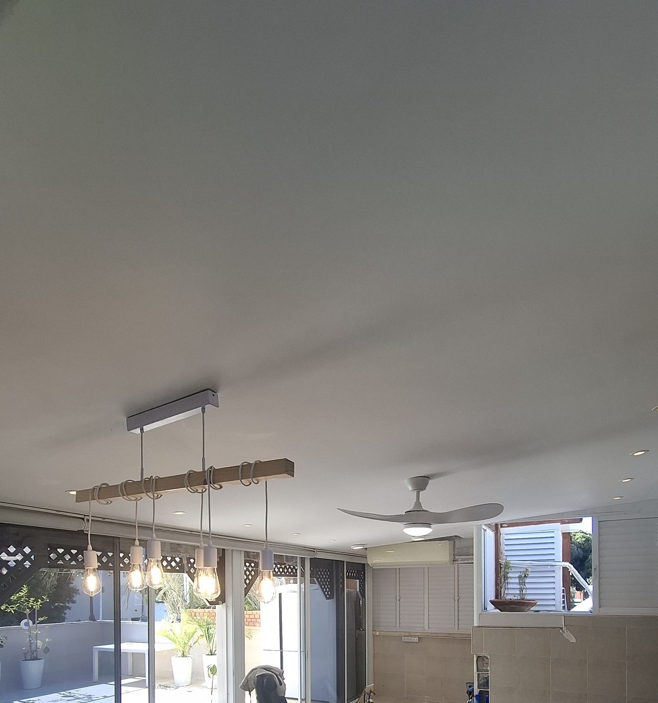

מעל 50 פרויקטים
עבודות גבס
וצבעים דקורטיביים · ברמת דיוק אחרת
- תקרות גבס ותקרות אקוסטיות
- נישות, מדפים ותאורה נסתרת
- קירות, מחיצות והנמכות
- טיח ערבה וצבעים דקורטיביים
- שיפוצים – לבתים ולעסקים



הוסמך ע"י קנאוף · טמבור · נירלט
ביצוע לפי התקן
4 שנות ניסיון
הצעת מחיר ללא התחייבות · מיכאל חגאג
058-5766956
אשדוד והסביבה · זמין גם בוואטסאפ